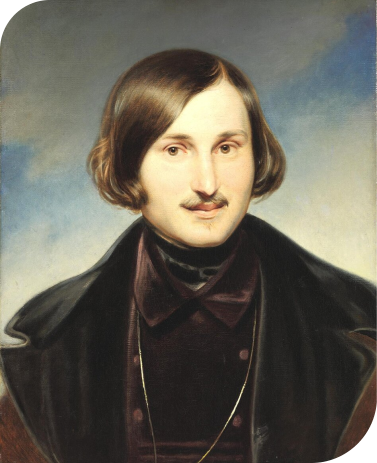

Николай Васильевич
Гоголь

Николай Васильевич Гоголь – классик русской литературы, писатель, драматург, публицист, критик. Самыми известными произведениями Гоголя можно назвать сборник «Вечера на хуторе близ Диканьки», посвященный обычаям и традициям украинского народа, а также величайшую поэму “Мертвые души”.